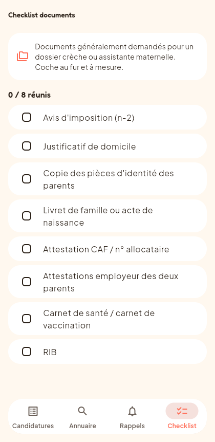

Les documents généralement demandés pour un dossier crèche ou assistante maternelle, réunis avant même d'avoir une réponse.
Essayer gratuitement →
Beaucoup de crèches fonctionnent sur liste d'attente : une place peut se libérer avec très peu de préavis. Avoir déjà réuni ses documents évite de perdre l'opportunité pendant que le dossier se complète dans l'urgence.
Gratuit, sans compte, toutes tes données restent sur ton téléphone.